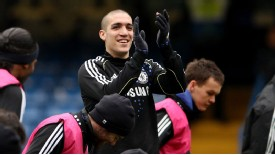

Oriol Romeu's agent has suggested the player could remain at Chelsea until 2013 before returning to Barcelona.

Romeu has made a positive impact at Chelsea after leaving the Camp Nou in the summer, but it has been reported that Barca are eager to take the player back and could even make their move in January. Upon completion of the deal it was said that Barcelona had the right to buy Romeu back for €10 million at the end of his first season or €15 million at the end of his second season, but there has since been confusion over that clause. Andre Villas-Boas said recently that it was only active if Chelsea wished to sell, while Barca reportedly disputed that claim. A Chelsea spokesman, responding to the persistent speculation, said earlier this month: "The contract stipulates that in any buy-back clause it's only if Chelsea wishes to sell, so essentially it's a first option. It does state it clearly in that contract and that contract is lodged with FIFA."
Agent Javier Magico Diaz has now suggested that Romeu is, in any case, not looking to leave Stamford Bridge for the time being. Asked if Romeu would return, he told Marca: "His dream before leaving was to be a Barcelona player and that still stands, but we cannot ignore the opportunity Chelsea have provided. "Oriol has made a name for himself in the Premier League and is playing regularly. We're committed to the club and we cannot leave them hanging." He added: "We'll have to see if it's appropriate for the club and the player. We need to know if he'll keep developing at Chelsea and playing. Maybe it will be more convenient to stay for another year and then return in 2013."